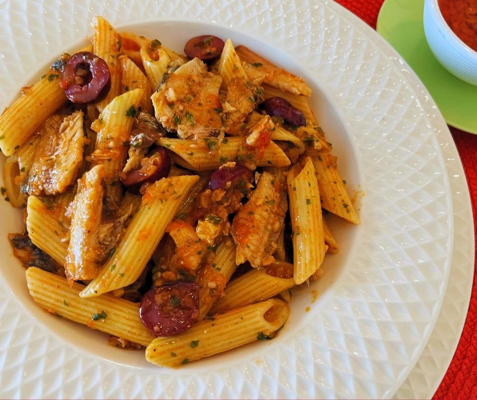

Macarrão com Sardinhas

Descrição
Saborosa receita refinada ao longo dos anos.
Não se engane, macarrão com sardinha não é comida só de universitário!
Ingredientes
- 350g de macarrão
- 1 lata de sardinha
- 1/4 de sachê de molho de tomate
- 3 colheres de sopa da shoyo
- pimenta do reino
- sal>
- orégano
- meia cebola
- 2 dentes de alho
- 100ml de água
- meia caixinha de creme de leite
Passos
- fritar a cebola e o alho picados
- picar e adicionar a sardinha, o molho de tomate, o shoyo e a água
- aquecer e misturar tudo
- adicionar os temperos
- preparar, em outras panela, o macarrão
- de volta ao molho, desligar o fogo e adicionar o creme de leite
- escorrer o macarrão e juntá-lo ao molho
- servir e se deliciar!